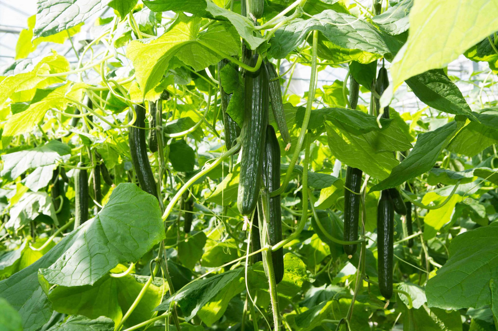

There are two types of cucumber plants: vining cucumbers and bush cucumbers.
Vining cucumbers, the most common varieties, grow on vigorous vines shaded by large leaves. The growth of these plants is fast, and the crop yield is abundant if you care for them properly. Vining varieties grow best when trained up a trellis or fence. Since they grow off the ground, the fruits will be cleaner—versus those that grow directly atop soil—often more abundant, and easier to pick.
Bush cucumbers, however, are nicely suited to containers and small gardens.
If youre interested in making pickles, we recommend several prolific varieties below that are bred especially for pickling, such as heirloom ‘Boston Pickling’ or ‘Calypso’. For crispy pickles, be sure to prepare them within a few hours of harvesting!
planting
Select a site that gets full sun (at least 6-8 hours of direct sunlight per day). Cucumbers like warmth and lots of light!
Cucumbers require fertile soil. Prior to planting, add about 2 inches of aged manure and/or compost to the bed and work it in to a depth of 6 to 8 inches. Soil should be moist but well-draining (not soggy) and have a pH of around 6.5 to 7.0.
Improve clay soil by adding organic matter. Improve dense, heavy soil by adding peat, compost, or rotted manure.
When to Plant Cucumbers
For an early crop, sow cucumber seeds indoors about 3 weeks before you plan to transplant them outside into the ground. Provide bottom heat of about 70ºF (21ºC) with a heating pad or place the seed flats on top of a refrigerator or water heater.
Outdoors, cucumbers should be sown or transplanted into the ground no earlier than 2 weeks after the last frost date. Cucumbers are extremely susceptible to frost and cold damage; the soil should be at least 70ºF (21ºC) for germination. Seedlings set best at that temperature, too. (In cooler climates, warm the soil by covering it with black plastic prior to planting.)
Make successive plantings (every 2 weeks) for continued harvests through the season. In warm soil, cucumbers will grow quickly and ripen in about 6 weeks.
How to Plant Cucumbers
Sow seeds 1 inch deep and about 3 to 5 feet apart in a row, depending on variety (see seed packet for details). For vines trained on a trellis, space seeds or plants 1 foot apart.
Cucumbers can also be planted in mounds (or “hills”) that are spaced 1 to 2 feet apart, with 2 to 3 seeds planted in each mound. Once plants reach 4 inches in height, thin them to one plant per mound.
If you live in a cooler climate, you can help warm the soil prior to planting by covering the hill or row with black plastic.
After planting, mulch around the area with straw, chopped leaves, or another organic mulch to keep pests at bay, and also keep bush types off the ground to avoid disease.
A trellis is a good idea if you want the vine to climb, or if you have limited space. Trellising also protects the fruit from damage from lying on the moist ground.
Cover freshly planted cucumber seeds with row covers, netting, or a berry basket if you have pests; this will keep them from digging out the seeds.
growing
When seedlings emerge, begin to water frequently.
The main care requirement for cucumbers is consistent watering! They need at least one inch of water per week (or more, if temperatures are particularly high). Inconsistent watering leads to bitter-tasting fruit.
Water slowly in the morning or early afternoon, and avoid getting the leaves wet, as that may encourage leaf diseases that can ruin the plant. If possible, water your cucumbers with a soaker hose or drip irrigation to keep the foliage dry.
Mulch around plants to retain soil moisture.
Cover young plants with row covers or berry baskets if pests appear.
When seedlings reach 4 inches tall, thin plants so that they are about 18 inches apart.
If you’ve worked organic matter into the soil before planting, you may only need to side-dress your plants with compost or well-rotted manure sparingly.
Otherwise, fertilize the plants with a liquid 5-10-10 fertilizer. Apply 1 week after the plant starts blooming and every 3 weeks thereafter, directly to the soil around the plants. Or, you can work a granular fertilizer into the soil. Do not over-fertilize or the fruits will get stunted.
If you have limited space or would prefer vertical vines, set up trellises early to avoid damage to seedlings and vines.

Recommended varieties
‘Boston Pickling’ (vine) is our favorite heirloom variety bred especially for pickling.
‘Burpless Bush Hybrid’ (bush) is good for small gardens, pots, or pickling.
‘Bush Crop’ (bush) is a dwarf variety with a high yield. Great for eating fresh.
‘Calypso’ (vine) is disease-resistant and has a high yield. Perfect for pickling.
‘Lemon’ (vine) produces round, yellow, super-sweet fruits. Fun for kids!
‘Parisian Pickling’ (vine) produces long, thin cucumbers perfect for making gherkins or cornichons.
‘Sweet Success’ (vine) is good for greenhouses, as it requires no pollinators. Produces seedless fruit.
Harvesting
At peak harvesting time, you should be picking cucumbers every couple of days. They’ll grow quickly!
Don’t let cucumbers get too large before harvesting or they will taste bitter.
Harvest regular slicing cucumbers when they about 6 to 8 inches long (slicing varieties).
Harvest dills at 4 to 6 inches long and pickling cucumbers at 2 inches long.
The large burpless cucumbers can be up to 10 inches long and some types are even larger.
Cucumbers are best picked before their seeds become hard and are eaten when immature. Do not let them get yellow. A cucumber is of highest quality when it is uniformly green, firm, and crisp.
Any cucumbers left on the vine too long will also get tough skins and lower plant productivity.
Use a knife or clippers to cut the fruit off the plant. Pulling it may damage the vine.
Keep on picking! If you don’t, as plants mature, they will stop producing.
How to Store Cucumbers
Cucumbers are over 90 percent water. Store wrapped tightly in plastic wrap to retain moisture.
They will keep for 7 to 10 days when stored properly in the refrigerator.
pets/diseases
Cucumber Pests and Diseases
Pest/Disease
Type
Symptoms
Control/Prevention
Anthracnose
Fungus
Yellow/brown/purple/black spots on leaves; sunken, dark spots on stems and fruit; spots may develop a salmon-pink, gelatinous mass; eventually, rot
Destroy infected plants; choose resistant varieties; provide good drainage; avoid overhead watering; apply compost; use mulch; rotate crops
Aphids
Insect
Misshapen/yellow leaves; distorted flowers/fruit; sticky “honeydew” (excrement); sooty, black mold
Grow companion plants; knock off with water spray; apply insecticidal soap; put banana or orange peels around plants; wipe leaves with a 1 to 2 percent solution of dish soap (no additives) and water every 2 to 3 days for 2 weeks; add native plants to invite beneficial insects
Blossom-end rot
Disorder
Dark, water-soaked spots on blossom end of fruit (opposite stem) may enlarge and become sunken and leathery
Caused by lack of calcium in fruit, often due to roots failing to obtain sufficient water and/or nutrients. Remove affected fruit; plant at proper soil temperature; water deeply and evenly; use mulch; maintain proper soil pH (around 6.5) and nutrient levels; avoid excessive nitrogen; provide good drainage; prevent root damage
Cucumber beetles
Insect
Holes in leaves/flowers; rasped fruit; plants stunted/die (Bacterial wilt signs: wilting; plants die; ends of cut stems, when pressed together for 10 seconds and pulled apart, release stringy, white sap)
Handpick; mulch heavily; use row covers; destroy plants infected with bacterial wilt
Cucumber mosaic virus
Virus
Varies with plant, but may include stunting, mottled green/yellow/white pattern or ringed spots on leaves/fruit; distorted leaf growth; warts on fruit
Destroy infected plants; choose resistant varieties and certified virus-free seed; use row covers; disinfect tools; weed; control aphids; use mulch
Downy mildew
Fungus
Yellow, angular spots on upper leaf surfaces that turn brown; white/purple/gray cottony growth on leaf undersides only; distorted leaves; defoliation
Remove plant debris; choose resistant varieties; ensure good air circulation; avoid overhead watering
Powdery mildew
Fungus
Typically, white spots on upper leaf surfaces expand to flour-like coating over entire leaves; foliage may yellow/die; distortion/stunting of leaves/flowers
Destroy infected leaves or plants; choose resistant varieties; plant in full sun, if possible; ensure good air circulation; spray plants with 1 teaspoon baking soda dissolved in 1 quart water; destroy crop residue
Squash bugs
Insect
Many small, yellow/brown/black spots on leaves; wilt; scarred fruit
Handpick; crush yellow/bronze egg clusters on leaf undersides; lay boards on soil and check for pests underneath each morning; remove plant debris; use row covers; rotate crops
Whiteflies
Insect
Sticky “honeydew” (excrement); sooty, black mold; yellow/ silver areas on leaves; wilted/stunted plants; distortion; adults fly if disturbed; some species transmit viruses
remove infested leaves/plants; use handheld vacuum to remove pests; spray water on leaf undersides in morning/evening to knock off pests; monitor adults with yellow sticky traps; spray with insecticidal soap; invite beneficial insects and hummingbirds with native plants; weed; use reflective mulch